DotPlot() renders a matrix of filled circles (dot plot) where dot
size encodes one numeric variable and fill colour encodes another. Either
axis can be numeric or factor, enabling four layout combinations:
Both axes factor — a classic dot matrix (e.g. genes × cell types), where each cell is a dot whose size reflects expression magnitude and whose colour reflects a summary statistic.
Both axes numeric — a scatter plot, with dots positioned by x/y coordinates, sized by a third variable, and coloured by a fourth.
One numeric, one factor — a strip plot or (with
lollipop = TRUE) a lollipop chart.
LollipopPlot() is a convenience wrapper that sets
lollipop = TRUE, producing horizontal bars from the y-axis to each
data point, capped by filled dots. It expects a numeric x and a
factor/character y.
Key features:
Auto-count: when
size_by = NULL, the per-combination observation count is computed automatically.fill_cutoff: values in
fill_bymatching a threshold expression (e.g."< 18") are greyed out with a dedicated legend entry.Background stripes:
add_bg = TRUEdraws alternating background bands along the discrete axis for visual grouping.Border modes:
border_colorcan track the fill gradient (TRUE), use a constant colour ("black"), or be suppressed (FALSE).Colour scale trimming:
lower_quantile/upper_quantile(or explicitlower_cutoff/upper_cutoff) trim the continuous fill scale extremes.
LollipopPlot() is a convenience wrapper around DotPlot()
that sets lollipop = TRUE. It renders a horizontal bar extending
from the y-axis (x = 0) to each data point, capped by a filled dot.
The bar has a two-layer construction: an outer shadow (black or custom
colour) and an inner coloured segment that follows the fill_by
gradient. Dot size scales by size_by (or the per-combination
observation count when size_by = NULL).
Expects x to be a numeric column and y to be a factor or
character column.
Usage
DotPlot(
data,
x,
y,
x_sep = "_",
y_sep = "_",
flip = FALSE,
split_by = NULL,
split_by_sep = "_",
size_name = NULL,
fill_name = NULL,
fill_cutoff_name = NULL,
add_bg = FALSE,
bg_palette = "stripe",
bg_palcolor = NULL,
bg_alpha = 0.2,
bg_direction = c("vertical", "horizontal", "v", "h"),
size_by = NULL,
fill_by = NULL,
fill_cutoff = NULL,
palreverse = FALSE,
size_min = 1,
size_max = 10,
theme = "theme_this",
theme_args = list(),
palette = "Spectral",
palcolor = NULL,
alpha = 1,
border_color = "black",
border_size = 0.5,
border_alpha = 1,
lower_quantile = 0,
upper_quantile = 0.99,
lower_cutoff = NULL,
upper_cutoff = NULL,
facet_by = NULL,
facet_scales = "fixed",
facet_ncol = NULL,
facet_nrow = NULL,
facet_byrow = TRUE,
x_text_angle = 0,
seed = 8525,
aspect.ratio = 1,
legend.position = "right",
legend.direction = "vertical",
title = NULL,
subtitle = NULL,
xlab = NULL,
ylab = NULL,
keep_na = FALSE,
keep_empty = FALSE,
combine = TRUE,
nrow = NULL,
ncol = NULL,
byrow = TRUE,
axes = NULL,
axis_titles = axes,
guides = NULL,
design = NULL,
...
)
LollipopPlot(
data,
x,
y,
y_sep = NULL,
flip = FALSE,
split_by = NULL,
split_by_sep = "_",
size_name = NULL,
fill_name = NULL,
fill_cutoff_name = NULL,
size_by = NULL,
fill_by = NULL,
fill_cutoff = NULL,
palreverse = FALSE,
size_min = 1,
size_max = 10,
theme = "theme_this",
theme_args = list(),
palette = "Spectral",
palcolor = NULL,
alpha = 1,
border_color = "black",
border_size = 0.5,
border_alpha = 1,
lower_quantile = 0,
upper_quantile = 0.99,
lower_cutoff = NULL,
upper_cutoff = NULL,
facet_by = NULL,
facet_scales = "fixed",
facet_ncol = NULL,
facet_nrow = NULL,
facet_byrow = TRUE,
x_text_angle = 0,
seed = 8525,
aspect.ratio = 1,
legend.position = "right",
legend.direction = "vertical",
title = NULL,
subtitle = NULL,
xlab = NULL,
ylab = NULL,
keep_na = FALSE,
keep_empty = FALSE,
combine = TRUE,
nrow = NULL,
ncol = NULL,
byrow = TRUE,
axes = NULL,
axis_titles = axes,
guides = NULL,
design = NULL,
...
)Arguments
- data
A data frame.
- x
A character string naming the column for the x-axis. Must be a numeric column (bars extend from 0 to the data value).
- y
A character string naming the column for the y-axis. Must be a factor or character column (each level gets a lollipop bar).
- x_sep
A character string used to join multiple
xcolumn values into a single factor level. Only used when x is non-numeric and multiple columns are provided. Default:"_".- y_sep
A character string used to join multiple
ycolumn values into a single factor level. Only used when y is non-numeric and multiple columns are provided. Default:"_".- flip
A logical value. If
TRUE, the x and y axes are swapped viacoord_flip(). Dimension calculation accounts for the flip. Default:FALSE.- split_by
The column(s) to split data by and generate separate plots for each level. The split column is processed for
keep_na/keep_emptybefore splitting.- split_by_sep
A character string used to concatenate multiple
split_bycolumn values. Default:"_".- size_name
A character string for the size legend title. When
NULL(the default), thesize_bycolumn name is used.- fill_name
A character string for the fill colour-bar legend title. When
NULL(the default), thefill_bycolumn name is used.- fill_cutoff_name
A character string for the fill cutoff legend title (shown when
fill_cutoffis active). Defaults to"<fill_by> <fill_cutoff>", e.g."mpg < 18".- add_bg
A logical value. If
TRUE, alternating background stripes are drawn behind the points viabg_layer(). The striped axis is determined bybg_direction. Requires the striped axis to be non-numeric. Default:FALSE.- bg_palette
A character string specifying the palette for the background stripe colours. Passed to
bg_layer(). Default:"stripe".- bg_palcolor
A character vector of colours for the background stripes. Passed to
bg_layer(). WhenNULL(default), colours are derived frombg_palette.- bg_alpha
A numeric value in
[0, 1]for the transparency of the background stripes. Default:0.2.- bg_direction
A character string specifying which axis receives the alternating background stripes.
"vertical"(default) stripes by x levels;"horizontal"stripes by y levels. Abbreviations"v"and"h"are also accepted.- size_by
A character string naming a numeric column whose values control dot size. When
NULL(the default), the per-combination observation count is computed automatically (viadplyr::summarise(n = n())) and used as the size variable. Iffill_byis also present, the first value offill_byper combination is retained with a warning. A single numeric value is also accepted and sets a constant dot size (used byScatterPlot).- fill_by
A character string naming a numeric column whose values control the fill colour of the dots (and lollipop inner bars). A continuous gradient from
paletteis applied viascale_fill_gradientn(). WhenNULL(the default), all dots are filled with a single constant colour from the middle of the palette.- fill_cutoff
A string expression specifying which values of
fill_byto grey out. Format: an operator followed by a number, e.g."< 18","<= 18","> 18", or">= 18". Values matching the condition are set toNAand rendered in grey ("grey80"), while the rest are coloured by the fill gradient. The operator determines which side of the threshold is greyed out, independent ofpalreverse. A numeric value is also accepted as shorthand for"<"(e.g.18is equivalent to"< 18"). Requiresfill_byto be set.- palreverse
A logical value indicating whether to reverse the palette. Default is FALSE.
- size_min
A numeric value for the smallest dot size in the
scale_size(range = c(size_min, size_max))range. Default:1.- size_max
A numeric value for the largest dot size in the
scale_size(range = c(size_min, size_max))range. Default:10.- theme
A character string or a theme class (i.e. ggplot2::theme_classic) specifying the theme to use. Default is "theme_this".
- theme_args
A list of arguments to pass to the theme function.
- palette
A character string specifying the palette to use. A named list or vector can be used to specify the palettes for different
split_byvalues.- palcolor
A character string specifying the color to use in the palette. A named list can be used to specify the colors for different
split_byvalues. If some values are missing, the values from the palette will be used (palcolor will be NULL for those values).- alpha
A numeric value specifying the transparency of the plot.
- border_color
Controls the dot border colour and lollipop outer-shadow appearance:
TRUE— dot borders and lollipop inner bars follow thefill_bygradient viascale_color_gradientn(); lollipop outer shadow is black."black"(default) — constant black borders on dots and black outer shadow on lollipop bars.A colour string (e.g.
"red","#FF0000") — constant colour for both dot borders and lollipop outer shadows.FALSE— no dot borders and no lollipop outer shadow (the inner coloured bars remain visible in lollipop mode).
- border_size
A numeric value for the stroke width of dot borders and the base linewidth of lollipop bars. In lollipop mode, the outer shadow uses
border_size * 4and the inner bar usesborder_size * 2. Default:0.5.- border_alpha
A numeric value in
[0, 1]controlling the transparency of dot borders and lollipop bar segments. Default:1.- lower_quantile, upper_quantile
Lower and upper quantiles for the continuous color/fill scale. The actual cutoffs are determined by these quantiles when
lower_cutoffandupper_cutoffareNULL. Defaults:lower_quantile = 0,upper_quantile = 0.99.- lower_cutoff, upper_cutoff
Explicit lower and upper cutoffs for the continuous color/fill scale. When
NULL(the default), the cutoffs are determined bylower_quantileandupper_quantileviaquantile. Values outside the[lower_cutoff, upper_cutoff]range are clamped (winsorized) to the nearest cutoff value.- facet_by
A character string specifying the column name of the data frame to facet the plot. Otherwise, the data will be split by
split_byand generate multiple plots and combine them into one usingpatchwork::wrap_plots- facet_scales
Whether to scale the axes of facets. Default is "fixed" Other options are "free", "free_x", "free_y". See
ggplot2::facet_wrap- facet_ncol
A numeric value specifying the number of columns in the facet. When facet_by is a single column and facet_wrap is used.
- facet_nrow
A numeric value specifying the number of rows in the facet. When facet_by is a single column and facet_wrap is used.
- facet_byrow
A logical value indicating whether to fill the plots by row. Default is TRUE.
- x_text_angle
A numeric value specifying the angle of the x-axis text.
- seed
The random seed for reproducibility. Passed to
validate_common_args(). Default:8525.- aspect.ratio
A numeric value specifying the aspect ratio of the plot.
- legend.position
A character string specifying the position of the legend. if
waiver(), for single groups, the legend will be "none", otherwise "right".- legend.direction
A character string specifying the direction of the legend.
- title
A character string specifying the title of the plot. A function can be used to generate the title based on the default title. This is useful when split_by is used and the title needs to be dynamic.
- subtitle
A character string specifying the subtitle of the plot.
- xlab
A character string specifying the x-axis label.
- ylab
A character string specifying the y-axis label.
- keep_na
A logical value or a character to replace the NA values in the data. It can also take a named list to specify different behavior for different columns. If TRUE or NA, NA values will be replaced with NA. If FALSE, NA values will be removed from the data before plotting. If a character string is provided, NA values will be replaced with the provided string. If a named vector/list is provided, the names should be the column names to apply the behavior to, and the values should be one of TRUE, FALSE, or a character string. Without a named vector/list, the behavior applies to categorical/character columns used on the plot, for example, the
x,group_by,fill_by, etc.- keep_empty
One of FALSE, TRUE and "level". It can also take a named list to specify different behavior for different columns. Without a named list, the behavior applies to the categorical/character columns used on the plot, for example, the
x,group_by,fill_by, etc.FALSE(default): Drop empty factor levels from the data before plotting.TRUE: Keep empty factor levels and show them as a separate category in the plot."level": Keep empty factor levels, but do not show them in the plot. But they will be assigned colors from the palette to maintain consistency across multiple plots. Alias:levels
- combine
A logical value. If
TRUE(the default), the list of per-split plots is combined into a singlepatchworkobject. IfFALSE, returns the raw list.- nrow, ncol, byrow
Integers controlling the layout of combined plots via
patchwork::wrap_plots().byrow = TRUE(default) fills the layout row-wise.- axes, axis_titles
Strings controlling how axes and axis titles are handled across combined plots. Passed to
combine_plots(). See?patchwork::wrap_plotsfor options ("keep","collect","collect_x","collect_y").- guides
A string controlling guide collection across combined plots. Passed to
combine_plots().- design
A custom layout specification for combined plots. Passed to
combine_plots(). When specified,nrow,ncol, andbyroware ignored.- ...
Additional arguments.
Value
A ggplot object (single plot), a patchwork object
(when combine = TRUE with split_by), or a list of
ggplot objects (when combine = FALSE).
A ggplot object (single plot), a patchwork object
(when combine = TRUE with split_by), or a list of
ggplot objects (when combine = FALSE).
split_by Workflow (DotPlot)
When split_by is provided, the following pipeline executes:
Column validation —
check_columns()resolvessplit_by(force_factor, allow_multi, concat_multi).NA / empty pre-processing —
process_keep_na_empty()handleskeep_na/keep_emptyfor the split column before splitting, then removes the split column from the per-splitkeep_na/keep_emptylists.Data splitting — splits
databysplit_bylevels (preserving factor level order).Per-split palette / colour —
check_palette()andcheck_palcolor()resolve per-split palette and colour overrides.Per-split legend —
check_legend()resolveslegend.positionandlegend.directionper split.Per-split title — when
titleis a function, it receives the default title (the split level name) and can return a custom string; otherwisetitle %||% split_levelis used.Dispatch — each split subset is passed to
DotPlotAtomic(withlollipop = FALSE).Combination —
combine_plots()assembles the list of plots viapatchwork::wrap_plots, honouringnrow/ncol/byrow/design.
split_by Workflow (LollipopPlot)
Same pipeline as DotPlot above, but dispatches to
DotPlotAtomic with lollipop = TRUE.
Examples
# \donttest{
mtcars <- datasets::mtcars
mtcars$carb <- factor(mtcars$carb)
mtcars$gear <- factor(mtcars$gear)
# --- Basic dot plot (factor × factor, size + fill) ---
DotPlot(mtcars, x = "carb", y = "gear", size_by = "wt",
fill_by = "mpg", fill_cutoff = "< 18")
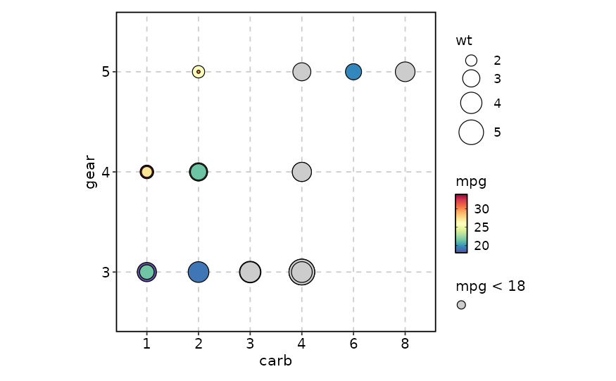
DotPlot(mtcars, x = "carb", y = "gear", size_by = "wt",
fill_by = "mpg", fill_cutoff = "> 18")
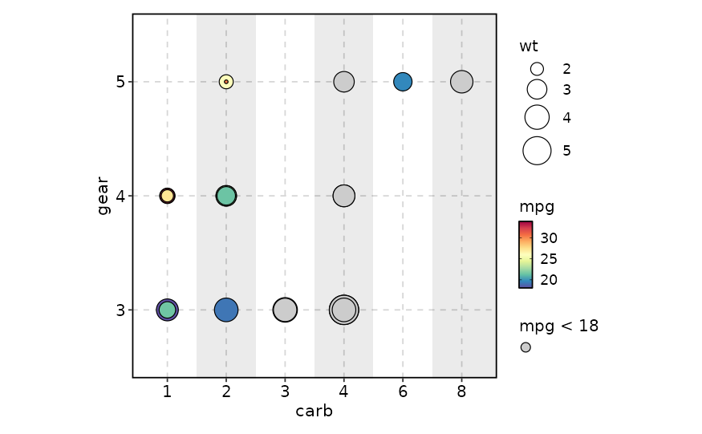
# --- Background stripes ---
DotPlot(mtcars, x = "carb", y = "gear", size_by = "wt",
fill_by = "mpg", fill_cutoff = "< 18", add_bg = TRUE)
 DotPlot(mtcars, x = "carb", y = "gear", size_by = "wt",
fill_by = "mpg", fill_cutoff = "< 18", add_bg = TRUE,
bg_direction = "h")
DotPlot(mtcars, x = "carb", y = "gear", size_by = "wt",
fill_by = "mpg", fill_cutoff = "< 18", add_bg = TRUE,
bg_direction = "h")
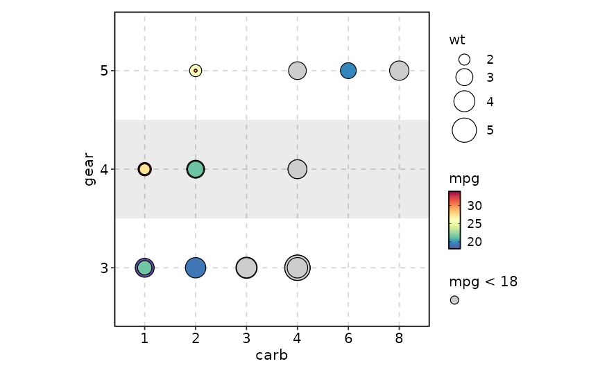
# --- Faceting ---
DotPlot(mtcars, x = "carb", y = "gear", size_by = "wt",
fill_by = "mpg", fill_cutoff = "< 18", facet_by = "cyl")
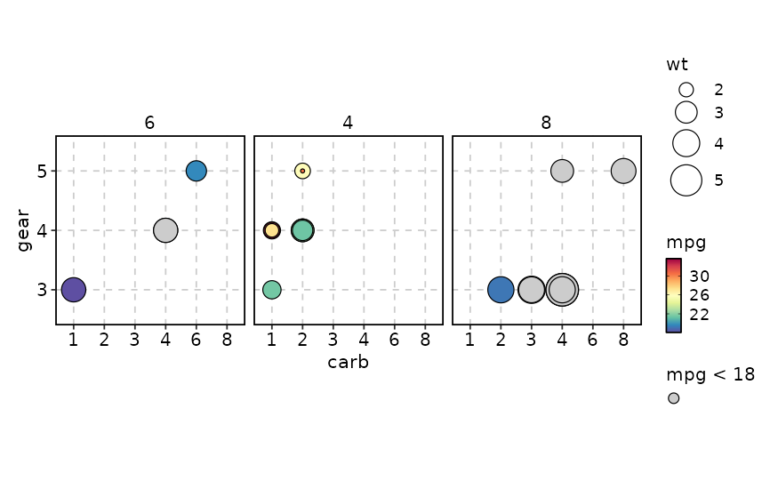
DotPlot(mtcars, x = "carb", y = "gear", size_by = "wt",
fill_by = "mpg", fill_cutoff = "< 18", facet_by = "cyl",
facet_scales = "free_x")
 # --- split_by ---
DotPlot(mtcars, x = "carb", y = "gear", size_by = "wt",
fill_by = "mpg", fill_cutoff = "< 18", split_by = "cyl")
# --- split_by ---
DotPlot(mtcars, x = "carb", y = "gear", size_by = "wt",
fill_by = "mpg", fill_cutoff = "< 18", split_by = "cyl")
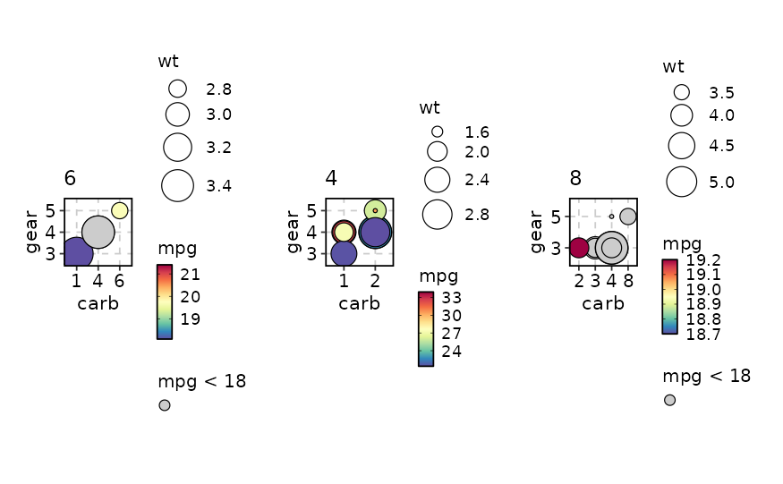
DotPlot(mtcars, x = "carb", y = "gear", size_by = "wt",
fill_by = "mpg", fill_cutoff = "< 18", split_by = "cyl",
palette = list("4" = "Set1", "6" = "Paired", "8" = "Reds"))
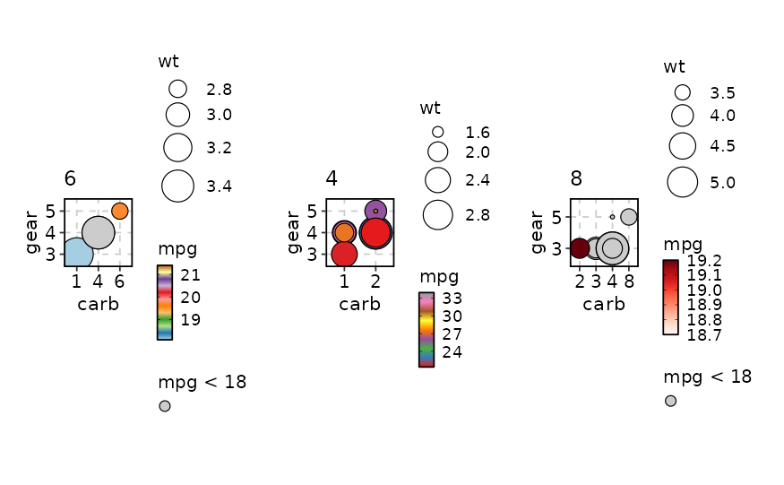
# --- Scatter plot (both axes numeric) ---
DotPlot(mtcars, x = "qsec", y = "drat", size_by = "wt",
fill_by = "mpg", fill_cutoff = "< 18",
fill_cutoff_name = "Small mpgs")
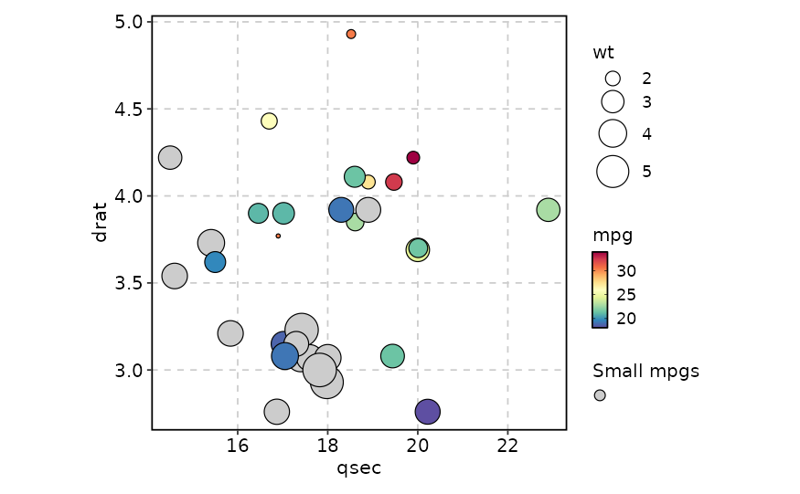
# --- keep_na and keep_empty ---
mtcars$carb[mtcars$carb == "1"] <- NA
mtcars$gear[mtcars$gear == "3"] <- NA
DotPlot(mtcars, x = "carb", y = "gear", size_by = "wt",
fill_by = "mpg", fill_cutoff = "< 18",
keep_na = TRUE, keep_empty = TRUE)
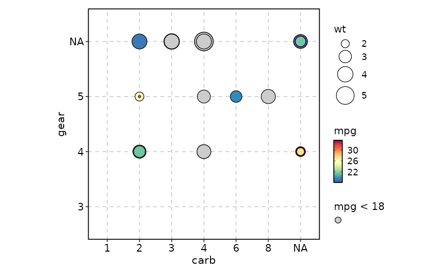
# --- Border customization ---
DotPlot(mtcars, x = "carb", y = "gear", size_by = "wt",
fill_by = "mpg", border_color = "red", border_size = 2)
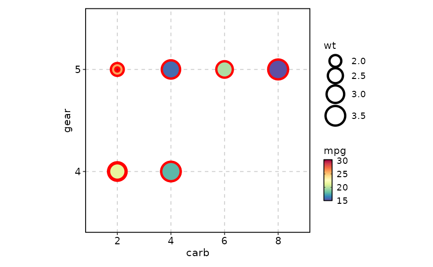
DotPlot(mtcars, x = "carb", y = "gear", size_by = "wt",
fill_by = "mpg", border_color = TRUE, border_size = 1.5,
border_alpha = 0.5)
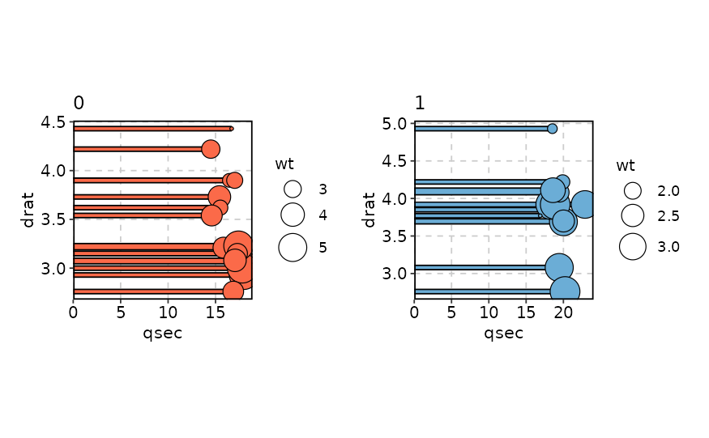
DotPlot(mtcars, x = "carb", y = "gear",
fill_by = "mpg", border_color = FALSE)
#> Warning: [DotPlot] Using the first value of fill_by.
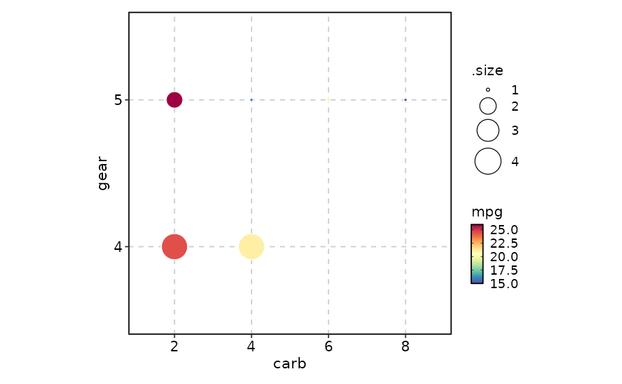
# --- Colour scale trimming ---
DotPlot(mtcars, x = "carb", y = "gear", size_by = "wt",
fill_by = "mpg", lower_quantile = 0.05, upper_quantile = 0.95)
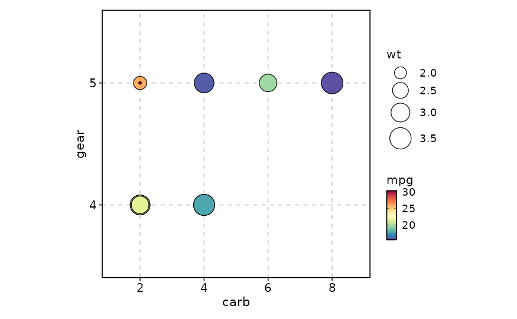
DotPlot(mtcars, x = "carb", y = "gear", size_by = "wt",
fill_by = "mpg", lower_cutoff = 15, upper_cutoff = 25)
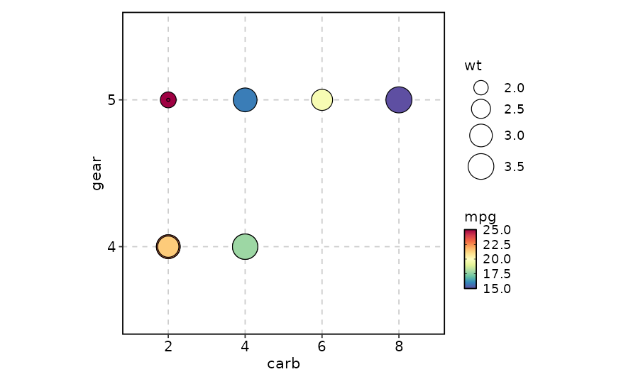
# }
# \donttest{
mtcars <- datasets::mtcars
# --- Basic lollipop ---
LollipopPlot(mtcars, x = "qsec", y = "drat", size_by = "wt",
fill_by = "mpg")
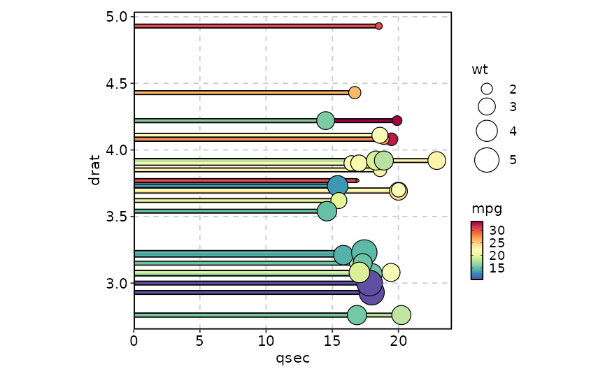
# --- Faceting ---
LollipopPlot(mtcars, x = "qsec", y = "drat", size_by = "wt",
fill_by = "mpg", fill_cutoff = "< 18", facet_by = "cyl",
facet_scales = "free_y")
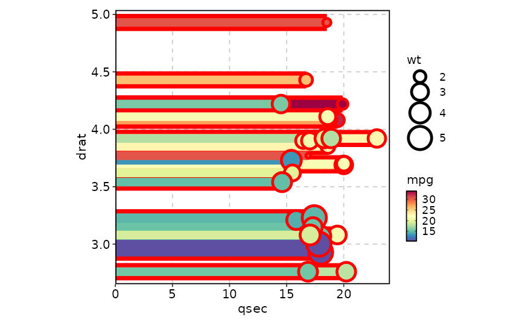
# --- split_by ---
LollipopPlot(mtcars, x = "qsec", y = "drat", size_by = "wt",
split_by = "vs", palette = list("0" = "Reds", "1" = "Blues"))
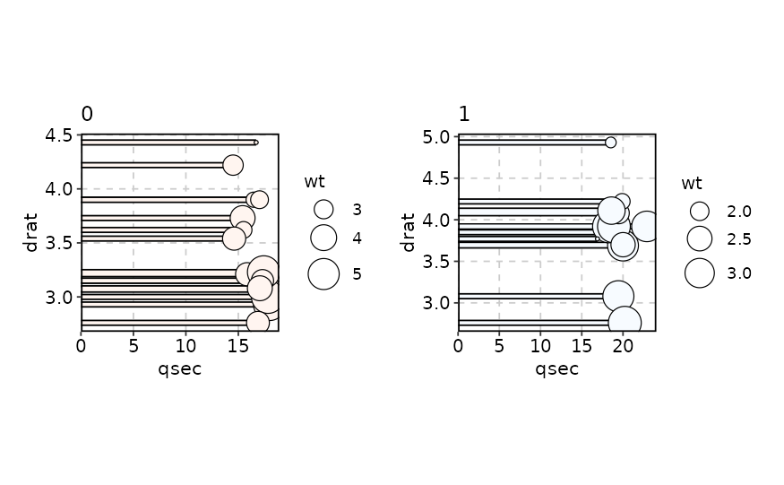
# --- Border customization ---
LollipopPlot(mtcars, x = "qsec", y = "drat", size_by = "wt",
fill_by = "mpg", border_color = "red", border_size = 2)
 LollipopPlot(mtcars, x = "qsec", y = "drat", size_by = "wt",
fill_by = "mpg", border_color = TRUE, border_size = 1.5,
border_alpha = 0.5)
LollipopPlot(mtcars, x = "qsec", y = "drat", size_by = "wt",
fill_by = "mpg", border_color = TRUE, border_size = 1.5,
border_alpha = 0.5)
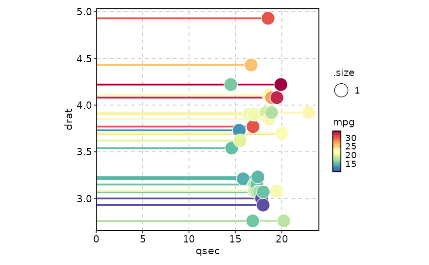
LollipopPlot(mtcars, x = "qsec", y = "drat",
fill_by = "mpg", border_color = FALSE)
#> Warning: [DotPlot] Using the first value of fill_by.
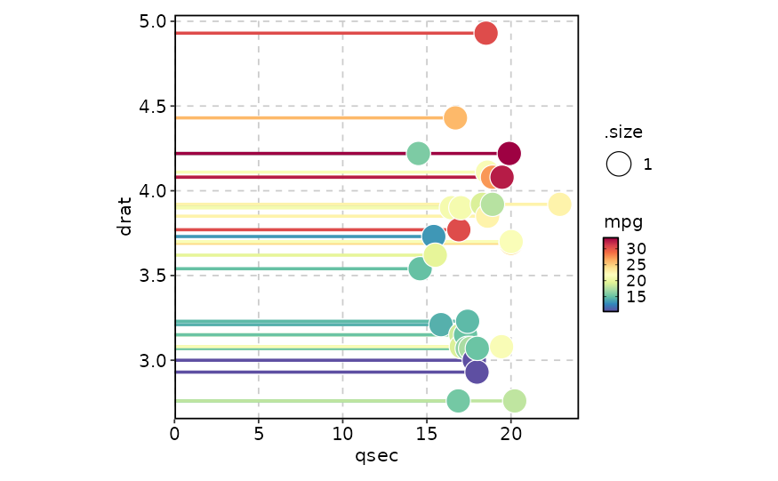
# }